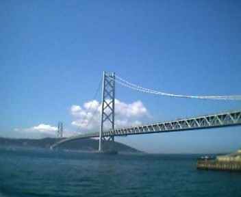
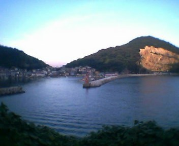

京都に住む生き物大好きな大学生（以下ばあど）にそそのかされ、決意した広島までのチャリ帰省。
こっちのほうも読むとバイオ２のレオン編クレア編みたいな多角的な視点から楽しめて面白いかと思います。事の発端はばあどのHP上での「チャリ帰省ツアー」開催宣言。地元の高校から関西にきた人間はけっこう少なく、HP閲覧者全員に声がかかるわけで。でも知ってる人もいると思いますが、このツアーに参加したのは俺とばあどの二人、そう大阪南部在住の男（以下アレックス）、逃げやがりました。「俺は車の免許取るから」とかいつでもできるような理由で先にガタンゴトンして帰りやがりました。
チャリで帰るってのはめったにできんってのに・・やつはこれで人生を損していると断言できるでしょう。それとおいアレックス、
前俺と晩飯かけて勝負して俺が勝ったの忘れてないよな！？まだ晩飯食わしてもらってないぞ、これ読んだら至急連絡しろ！
ちょっと話それました、それでスケジュールとしては８月９日にばあどが京都から大阪（うち）に、それで１０日〜未定で広島へ到着予定だったんです。問題だった台風も過ぎ、ばあどからいまから京都を出るとのメールを受信、それからばあどがくるまで荷物の準備をする・・しようとしてたら、
私を・・置いていくの・・？そんな声が聞こえた
（気がした）それで振り返るとそこにはだいたい１日の４分の１あたりの時間を共にしてきたパソコンが。「実家帰ると原始時代（現在実家はネット接続なし）に戻るんだよなぁ」準備そっちのけでパソコンいじる。気付くと数時間経過、ばあどからそろそろ着くとの連絡を受け出向かえに。合流し大学内を通り抜け家に戻る。実はチャリ帰省の他にもう一つ目的があった、大学入りたての頃、「幅広い知識を！！」とか今思うと無駄にエネルギー発してた頃、触れたことない生物の講義をとってたんです。でも実際は根性なしで生物に興味のない俺は、授業にもっていくのは
マンガとCDプレイヤー、とりあえず出席点だけはかせいでたんですが遺伝に関するレポートの宿題出されたらどうにもなりません。そこで、
生物俺はわからない→
ばあどは農学部生→
調度いい！！まあこんな流れになるわけで。口では
「手伝って」と言ってはいたがこういう時の手伝っては、
「やって」と同じ意味を持つことを改めて実感。でもなんかレポート難しいらしくすぐにはできそうにないことが判明（後日遺伝のレポートの代わりに真菌（キノコ）の歴史のレポートをばあどから譲り受ける）自分でやる気（と知識）がない俺はそのキノコレポートを代わりに提出。単位が取れるかは今現在未定（９/１８日くらいに判明、十中八九落とすものと思われる）生物すんだら晩飯くってそれから準備して就寝。
朝６時、起床、朝食はいつものごとく
ラーメン。ばあどにとってはいつものことではなさそうだったがそんなのは気にもとめず鍋のまま出す。それを食べていざ出発。荷台にカバンを巻きつけて走り出す。巻き方が甘かったのか出発して１時間のうちに数回カバンを落とす。
一瞬フワッとペダルが軽くなる、いやな感覚が俺を襲う。巻き方のこつもある程度わかり走る続けること数時間、明石海峡大橋に到着。
見たことある人は分かるだろうけどこいつはすごいね、
人間こんなの作れるのかよ、そう感じた夏の日差しの下・・。
う〜ん俺たち青春してる☆でもいくら青春してるからといって
「よし、あの雲のとこまで競争だ☆」とか言って橋を渡ってしまうほど俺らはアホではなかったらしく橋は渡らず西へ。
明石海峡大橋を過ぎるとたいした名所らしき場所もなく、走り続ける。昼を過ぎ、日差しが強くなってくるとチャリをこぐのが苦痛になるくらい日差しが強い、ってか、
日差しが痛い
マジでチクチクすんだよね。日焼け止めしてても限界がきてマックで休憩をとることに。日差しの弱まる夕方まで２時間近く、
マックで仮眠をとる。夕方、日差しも弱まり仮眠をとり、出発。海岸沿いへ。
はりまシーサイドロードって名前の海岸沿いの道を走る。シーサイドロードっていうと聞こえはいいが何のことはない、ただの山道、海岸沿いのくせに。店無し、自販機なし、電灯なし、海岸沿いのくせに。自転車野郎にはきびしい環境（もともと自転車が走るような道じゃない）こんなところで夜を迎えるわけにもいかず必死こいて走破。力尽きつつ着いたのは播州赤穂。今日はここで泊まることに。ちょうどいい寝床をさがしにうろついていると犬の散歩しているおじさん発見、野宿によさそうな場所を教えてもらう。
ここの近くで就寝・・・のはずが蚊の大群にやられ眠れそうにない。ばあどがコンビニまで虫除けスプレーを買いに走る。しかし虫除けスプレーをしても蚊はよってくる・・「そんなに俺が好きなのか？」アホなこと考える
以上にいらいらしてさらに眠れず、そんな時にばあどの流していたELTが耳に残り、今では
ELT＝蚊の構図が頭の中にできてしまいました、う〜ん、トラウマって恐ろしい。
本日の水分摂取量・・３，９リットル
睡眠不足で迎えた二日目。今日は日差しがそんなに強くなくチャリ日和な予感。走り始めてすぐ岡山に入る。岡山、広島の地図は持ってないのでとりあえず２号線を西へ走る。岡山に入ったあたりから２号線のチャリに対する態度が冷たくなる。自転車走行禁止の道路になったり、無駄に曲がりくねったり、もうヤケで
バイパスに進入。でもやっぱり危ない、ってか怖い。自転車の横１メートルあるかないかの距離を何台ものトラックが追い越していく。追い越されるたびに風で自転車が揺れる。時には煽られたりしてもうマジヤバイ。
ヤバイ、ヤバー、ヤバーストの３段階で言ったら間違いなくヤバーストの部類。もう最上級。で体力的に安全性にも問題があると認識しバイパスを降りる。なんとか広島に入る。福山あたりから雨がパラパラ降り出す、どうやらチャリ日和ではなかったようだ。でももうやけくそでこぐ・・・
道が分からなくなる。広島県で迷子になるとは思わなんだ。
しかもパンクする・・・フシュシュシューって。一度修理して直ったかに見えたが再発。セブンで再度修理を試みるも修理道具も使い果たしどうにもならなくなり歩く。そうすると「竹原はこっち」の看板が見えたためばあどと別れる。その竹原に続いているらしき細道を歩くも明かりなし、見たことない景色。
「ほんまにこの道大丈夫かよ？」そんなオーラ漂いここで俺の精神力限界。電波が入らなかったため２号線に戻りおかんに電話をかける。
タケユキ「もしもし、迎えに来て欲しいんだけど」
おかん「は？あんた帰ってきてんの？」
そうでした、親びっくりさせるため帰省する日教えてなかったんだ・・。
おかん「それで今どこなわけ？駅？」
タケユキ「２号線」
おかん「は？意味わからんよ、で、２号線のどこ？」
周りを見渡すと目に映るは、
ラブホテル街。いくらなんでも親にここに迎えに来てもらうのは問題がある。
タケユキ「セブンまで迎えに来て」パンクを修理したセブンまで戻ることに。戻ると同時くらいにおかんもセブン到着。俺を見る前に、チャリを見て、
おかん「あんた、これ（チャリ）なに？」
タケユキ「チャリ」